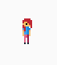

Elisa - Sprite Sheet-based Animation

Hello Elisa fans. Today’s post is about one of the latest examples, that we added to the repository. This example, elisa_7_sprite_animation is basically an abstraction and cleanup of some of our past endeavors.
Specifically, we introduced types dealing with sprites like the individual sprite, which is basically the collection of attributes defining some piece of graphics on the game screen. Critically, sprites are defined in terms of an underlying image container like a jpg or png file. Usually, we see a sprite as a single image on screen, such as a single animation frame or the image of a house in a 2D city. Naturally, we associate a name, some technical id and a visibility tag with a sprite. If multiple sprites are stacked, there z ordering can be used to define some sort of importance among them. Other than that, the core behaviour from our Sprite type is to initialize a sprite from the mentioned image source and prepare it for being drawn to the screen using Pygame’s blit or any other method.
On top of that, the Sprite sheet is introduced. Sprite sheets are collections of individual image pieces/ sprites. Usually, this collection is scoped to a single entity, domain, or game character like having all individual images that make up the distinct animation sequences of your game’s main character in one image file. For Elisa, we defined a meta-data descriptor on top of such a raw image file. This descriptor is a json file that indexes individual sprite animation sequences within the larger image container. Surely, such a sequence can also be bound just a single image. However, the point of sprite sheets is to avoid the overhead of having to go through locating, reading, and dealing with single images. Instead, individual pieces within a larger surface are efficiently indexed. Most importantly, the Sprite Sheet’s index is a map, so that you reference individual images by logical names. This will come in handy in the next step.
For simplicity, a third type SpriteAnimation (as opposed to key frame-based animation) is introduced, which allows us to conveniently bind together single frames coming from the mentioned sprite sheet in a linear sequence over time. This linear sequence within a defined period is what makes up the concept of an animation. If the time between consecutive images is too large, it appears as if there was no motion at all, if it is too small we see a too rapid succession of images and the intended mental concept (walking, jumping) is not invoked at the viewer’s side. Irrespective of this, our animation type defines some data slots for the lengths of an animation the targeted number of animation frames to be displayed per second (frame per second) and respective methods to evoke the desired behaviour.
Now, in elisa_7_sprite_animation we use these types to define two types of animation for our Elisa sprite. The first being an idling animation, where Elisa basically stands still at her place and the second animation being a walking animation. Both animations live in separate animation objects drawing their content from a single sprite sheet. From an interaction point of view, the demo allows you to press the left and right arrow keys to invoke the moving animation. However, we do not give any visual distinction between Elisa walking left or right. If no, key is pressed Elisa will idle. In the past, we cycled between these three (idle, walk left, walk right) sprite states via explicitly handling the keyboard interaction and setting flags. However, since an existing Elisa example has already introduced state machines, we make use of a state machine here as well. Naturally, our Elisa state machine defines three states (the ones mentioned), and transitions between them based on the keyboard input and the current state, i.e. if Elisa is idling and a key is pressed, Elisa will enter the walking stage. On the other if Elisa is walking and the key is pressed, she continues walking else she will enter the idling stage again. As you will observe in the example, the dynamics of the state machine are separated somewhat well. However, the coupling of state machine with animation system is still part of the example. Naturally, to improve the example we would devise a way to bind the two together elsewhere keeping our main logic container focused.
We hope that you like the example so head over to elisa_7_sprite_animation. As always, let us know what you think in the comments, check out Elisa and overall, just enjoy the ride!